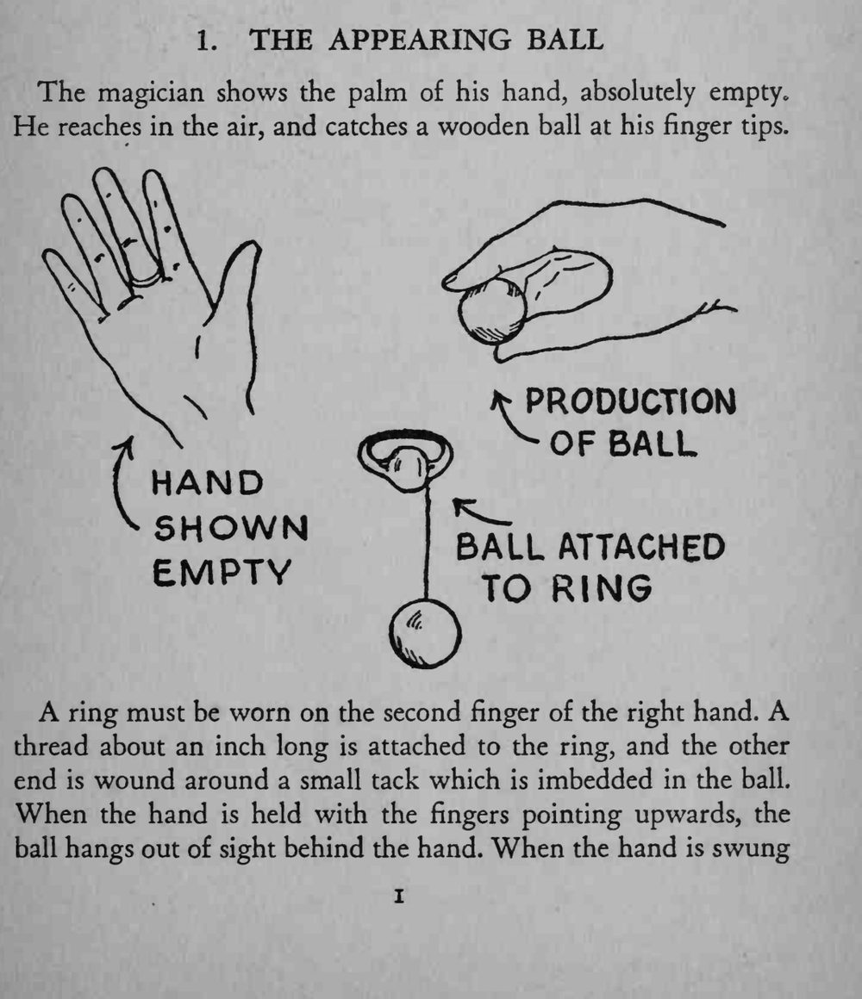
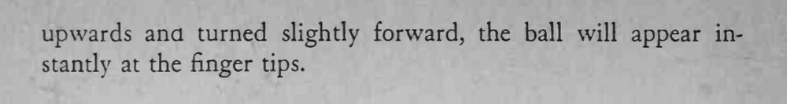

BALL TRICKS / 球类魔术 · 第 1 个魔术 · 原书 p.21-22
浮现的球
THE APPEARING BALL
| 道具 | 木球（内嵌小钉）、一英寸细线、戒指 |
| 难度 | 入门 |
| 时长 | 1 分钟 |
| 场合 | 近景 / 桌面 |
| 需托 | 否 |
效果
魔术师摊开手掌，掌心空无一物；他伸手向空中一抓，指尖上便凭空出现一颗木球。
方法
- 右手第二根手指（中指）戴一枚戒指，戒指上系一根约一英寸长的细线，线的另一端绕在嵌进球里的那枚小钉上。
- 手掌竖起、手指朝上时，球垂在手掌背面，被手背完全挡住。
- 展示空掌之后，把手往上一挥、再略向前一翻，球便瞬间弹到指尖，看上去就像从空中抓来。
提示
成败全在线长与挥手的角度：线太短球藏不住，太长球弹不上指尖。


The magician shows the palm of his hand, absolutely empty. He reaches in the air, and catches a wooden ball at his finger tips.
A ring must be worn on the second finger of the right hand. A thread about an inch long is attached to the ring, and the other end is wound around a small tack which is imbedded in the ball. When the hand is held with the fingers pointing upwards, the ball hangs out of sight behind the hand. When the hand is swung upwards and turned slightly forward, the ball will appear instantly at the finger tips.
BT-001 · 400 Tricks You Can Do · 中文重排版